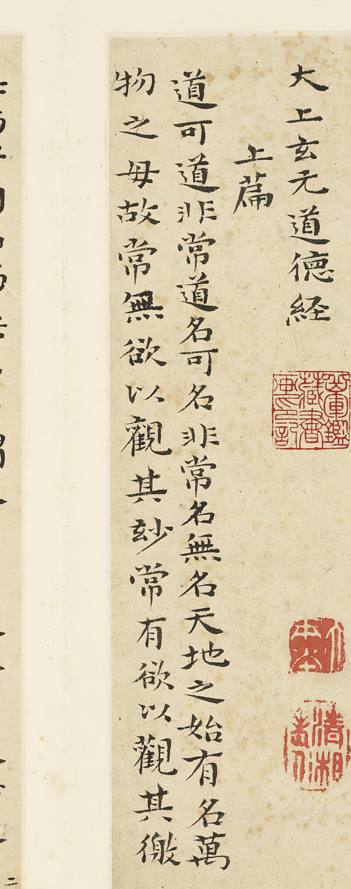
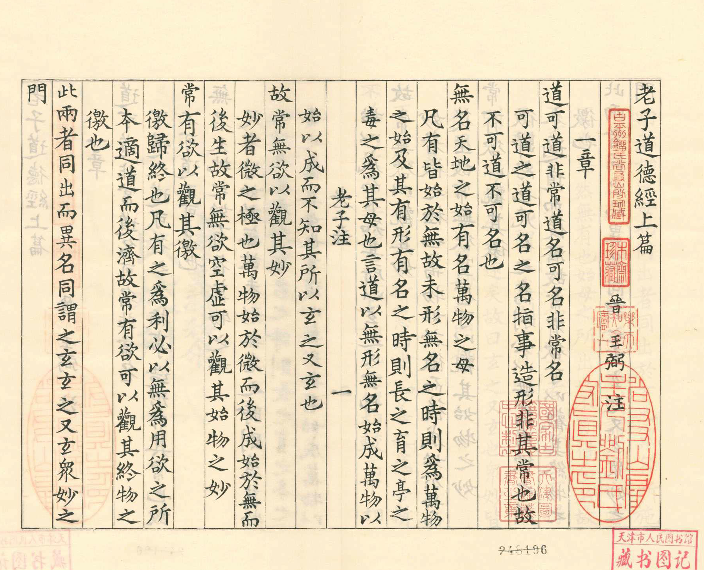
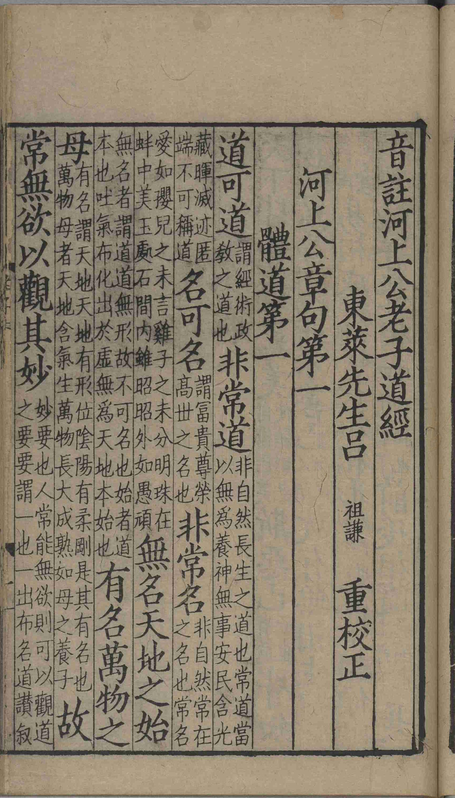
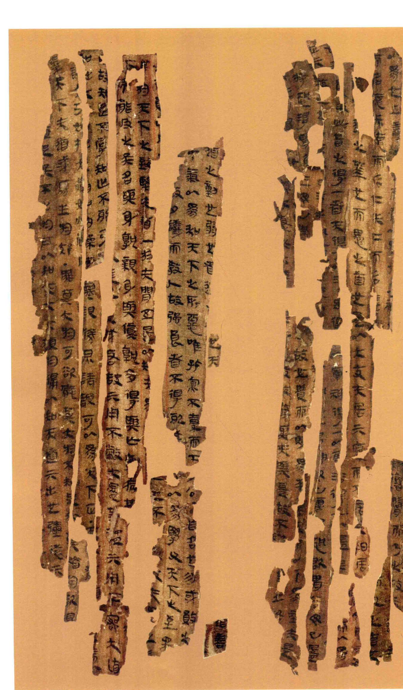
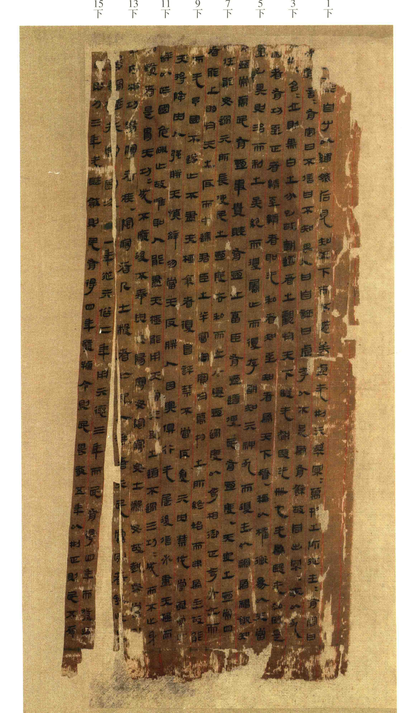

首一「道」字为言说、称道；次「道」字方是老子哲学的最高范畴——宇宙的本根与律则。开篇即以语言能否把握道立论，可道者已非常道。

全书开宗明义：可用言语表述的「道」，就不是恒常不变的道。一句话划出了语言与真理的界限，也把全书的起点立在不可言说处。
四本并观，可见文本两千年的流动——帛书句句带「也」，恒字避讳作「常」，句读千年聚讼，皆浓缩于此章。

王弼本 白口，单鱼尾，左右双边。经文大字顶格，王弼注双行小字低一格附于句下，叶心题「一章」，卷首钤「王弼注」牌记。
河上公本 黑口，对鱼尾。章题「體道第一」冠首，经注连文，音注夹行细字——「謂經術政教之道也」诸语即叶面所见。

图一为《古逸叢書》据集唐字本景刊本，清末黎庶昌刻于日本，经注同叶、朱墨粲然，最存旧本之貌；本册经文即以此为底。
图二为南宋建阳麻沙刘通判宅仰高堂刊本，台北故宫博物院藏，题「東萊先生呂祖謙重校正」。建本字体方峻，音注随文夹行，为宋刻民坊本之典型。
二本经文同作「無名天地之始」「觀其玅」，与帛书「無，名萬物之始也」「觀其眇」正可对勘。


首一「道」字为言说、称道；次「道」字方是老子哲学的最高范畴——宇宙的本根与律则。开篇即以语言能否把握道立论，可道者已非常道。
称谓、命名。可名之名，系于具体事物；常名则是道之恒常称谓——道本不可以名名之，故名之为「名」亦只是权宜。
道的未显状态，天地自此发端。或读「無，名萬物之始也」，以「無」「有」对文（帛书句尾「也」字可证，说详校勘记）。
道之显而为万物者，万物由之以生，故称「母」。始与母，一就其端言，一就其生言。
微之极。王弼注：「妙者，微之極也。萬物始於微而後成，始於無而後生。」帛书作「眇」，刻本或作「玅」，一字异体。
归终、边际，引申指道显现之端倪与归趣。王弼注：「徼，歸終也。」帛书借字作「噭」，义并同。
幽深不可测之谓。王弼注：「玄者，冥也，默然無有也。」河上公则以天释玄：「玄，天也。」「玄之又玄」，谓并此一玄而复遣之，不令执著。
一切精微所从出之门户。王弼注：「眾妙皆從同而出，故曰眾妙之門也。」
王弼曰 可道之道，可名之名，指事造形，非其常也。故不可道，不可名也。
王弼曰 凡有皆始於無，故未形無名之時，則為萬物之始；及其有形有名之時，則長之育之，亭之毒之，為其母也。
河上公曰 謂經術政教之道也，非自然長生之道也。常道當以無為養神，無事安民。
首章是全书的总纲：道在语言与名相之外，故一开篇便做「否定」——可道的不是常道，可名的不是常名。然而道并非空洞的悬设，它显现为「无」与「有」两面：无名而为天地之始，有名而为万物之母。观道者须兼此两观——观其妙，复观其徼。两者同出而异名，同归于玄；连「玄」也不可执，故曰「玄之又玄」。第四十章「天下萬物生於有，有生於無」，正是此章的展开。
| 王弼本 | 河上公本 | 帛书甲本 | 帛书乙本 | 备考 |
|---|---|---|---|---|
| 非常常道 | 同 | 非恆道也 | 同甲（前句残） | 避讳改字，详校按一 |
| 無名天地之始 | 無名，天地之始 | 無，名萬物之始也 | 同甲 | 用字与句读两异，详校按二 |
| 觀其妙 | 觀其玅 | 觀其眇 | 同甲（残） | 一字异体，详校按三 |
| 觀其徼 | 同 | 觀其所噭 | 恆又欲也，觀其所噭 | 噭为借字；帛书多「所」字 |
| 此兩者同出而異名 | 同 | 兩者同出，異名同胃 | 同甲 | 帛书无「此」；胃，借为「謂」 |
| 玄之又玄 | 同 | 玄之有玄 | 同甲 | 有，通「又」 |
| 眾妙之門 | 同 | 眾眇之〔門〕 | 眾眇之門 | 甲本「門」字残泐拟补 |
避讳改字。帛书甲乙本并作「非恆道也」，今本作「常」，盖汉人避文帝刘恒讳改。恆、义本相通，改字而义存；帛书句尾「也」字三见，今本则删之。
句读与用字。「無名天地之始」今本两系并同；帛书作「無，名萬物之始也」，不惟句读不同，「天地」亦与「萬物」异文。近人或据帛书句式主「无／有」绝句之读，义各有所见，本册译文从旧读而附记新读。
妙字异体。帛书作「眇」，王弼古逸本、河上公本、石涛写本并作「玅」，今通行整理本作「妙」——三形一字，经义无别。
石涛写本可补证。石涛楷书册本章一作「無名天地之始」「觀其玅」，与刻本系相同，可见清初书家所据仍是通行本系统；其自题「己卯八月」（康熙三十八年，1700），为断代之助。
魏王弼注《老子道德經》二卷，义理派注老之冠。本册所用为《古逸叢書》据集唐字本景刊本，经文大字、注双行，最存宋本旧貌。
旧题汉河上公章句，民间流传最广。本册所用为南宋建阳麻沙刘通判宅仰高堂刊本，台北故宫博物院藏，吕祖谦重校，音注随文。
一九七三年长沙马王堆三号汉墓出土，抄写于西汉初年，皆〈德〉篇在前、〈道〉篇在后，多用借字，句尾多「也」。释文从《長沙馬王堆漢墓簡帛集成》。